Candidate List 20260525 Previous Day Next Day Section 1: New Sources (age<1d) Cosmological Afterglow
Section 2: Old (1-5d) sources observed last night placeholder
Section 1: New Afterglow/FBOT Cands Last Night (6)
1. ZTF26aayqpwo (Afterglow?) [Back to Top] [Share] [Trigger Swift] [Fritz ] [Lasair ]RA, Dec: 235.75421, 17.30933 15h43m1.01s, 17d18m33.59sGalactic (l, b): 28.17031, 49.30148 ext(g-r) = 0.046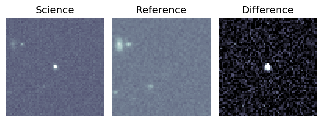
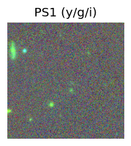
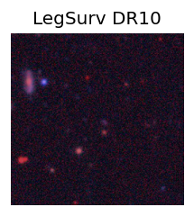
peak abs mag = -25.16 LegacySurvey: 1 sources in 3 arcsec Closest: d = 3.18 arcsec, 243.9 deg (east of north) photoz=1.06 (68% bounds 0.91, 1.25), type=EXP peak abs mag = -25.98 (68% bounds -25.58, -26.42) 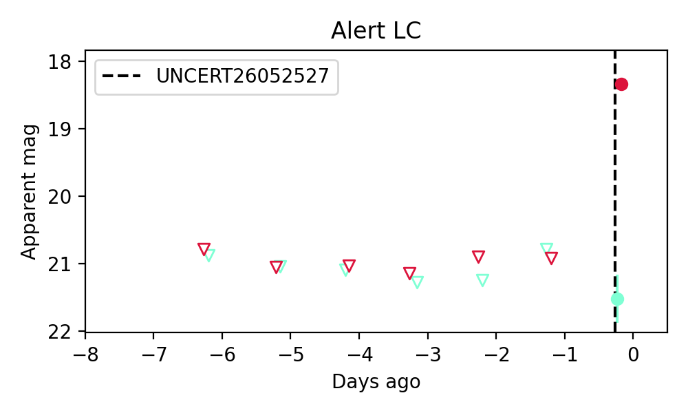
Consistent with synchrotron, g-r>0!
2. ZTF26aayqxxt (Afterglow?) [Back to Top] [Share] [Trigger Swift] [Fritz ] [Lasair ]RA, Dec: 258.84602, -16.85772 17h15m23.05s, -16d-51m-27.80sGalactic (l, b): 6.44119, 12.37942 ext(g-r) = 0.355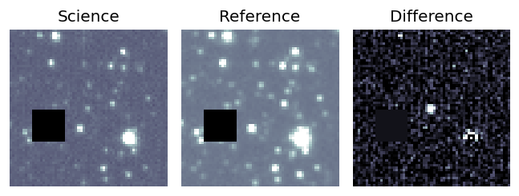
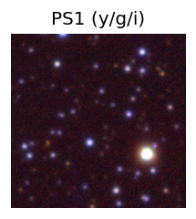
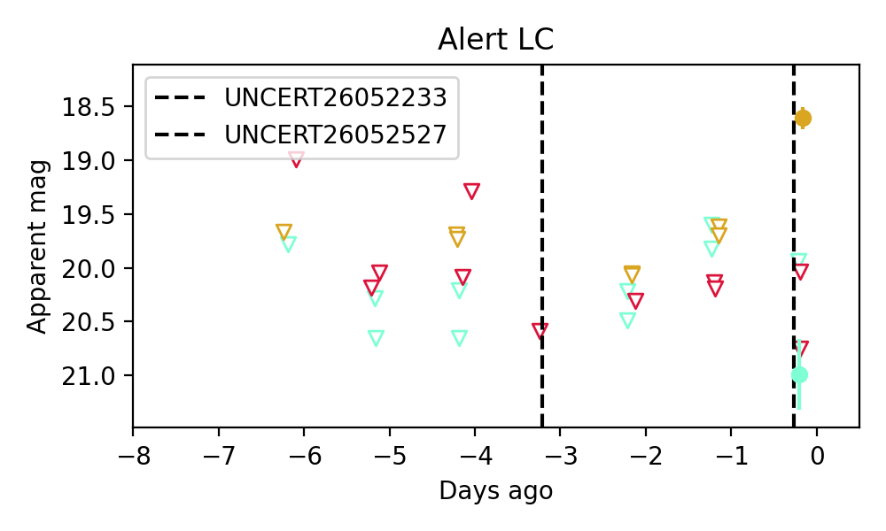
Consistent with synchrotron, g-r>0!
3. ZTF26aayqyey (Afterglow?) [Back to Top] [Share] [Trigger Swift] [Fritz ] [Lasair ]RA, Dec: 251.99297, -22.99242 16h47m58.31s, -22d-59m-32.73sGalactic (l, b): 357.46243, 14.01723 WARNING: -0.58 deg from ecliptic plane ext(g-r) = 1.026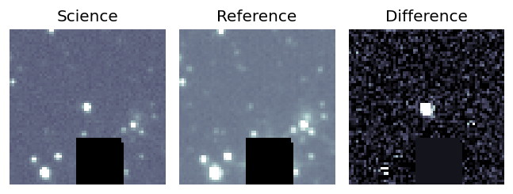
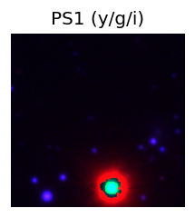
PS1: 1 source in 3 arcsec Closest: d = 2.46 arcsec photoz=0.42+/-0.20 peak abs mag = -27.26 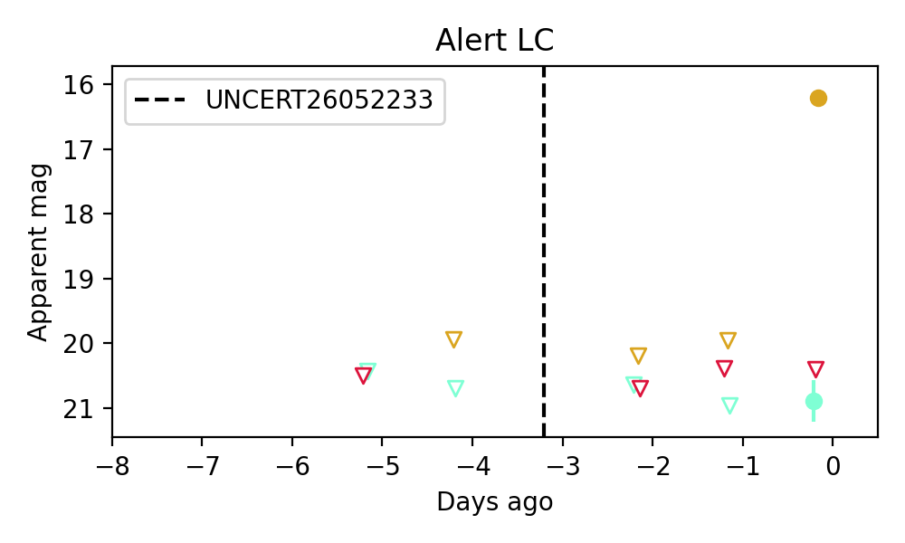
Consistent with synchrotron, g-r>0!
4. ZTF26aayrfea (Afterglow?) [Back to Top] [Share] [Trigger Swift] [Fritz ] [Lasair ]RA, Dec: 259.01772, -18.06794 17h16m4.25s, -18d-4m-4.57sGalactic (l, b): 5.50535, 11.5711 WARNING: 4.97 deg from ecliptic plane ext(g-r) = 0.304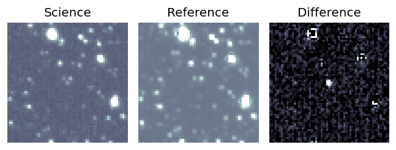
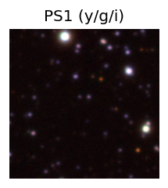
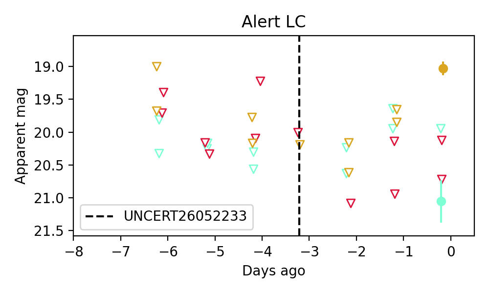
Consistent with synchrotron, g-r>0!
5. ZTF26aaysnjc (Afterglow?) [Back to Top] [Share] [Trigger Swift] [Fritz ] [Lasair ]RA, Dec: 284.53643, 33.94533 18h58m8.74s, 33d56m43.18sGalactic (l, b): 64.42673, 13.47471 ext(g-r) = 0.065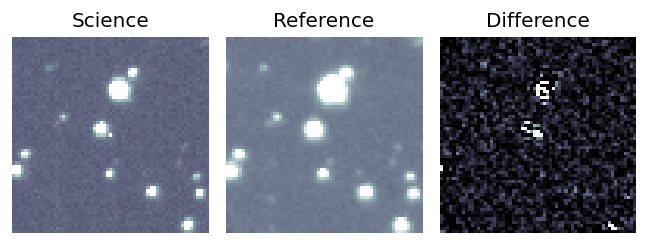
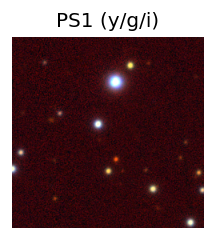
PS1: 1 source in 3 arcsec Closest: d = 3.97 arcsec photoz=0.37+/-0.56 peak abs mag = -21.84 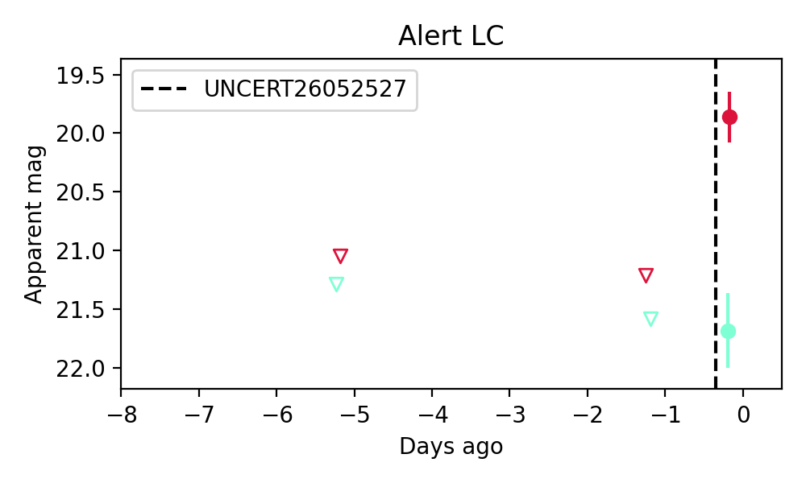
Consistent with synchrotron, g-r>0!
6. ZTF26aaytiku (Afterglow?FBOT?) [Back to Top] [Share] [Trigger Swift] [Fritz ] [Lasair ]RA, Dec: 303.89441, 14.01217 20h15m34.66s, 14d 0m43.80sGalactic (l, b): 55.3878, -11.50993 ext(g-r) = 0.18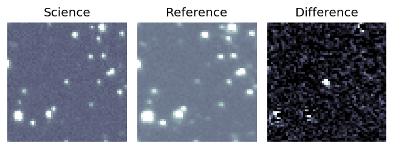
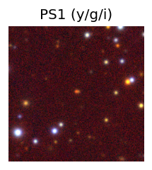
peak abs mag = -23.49 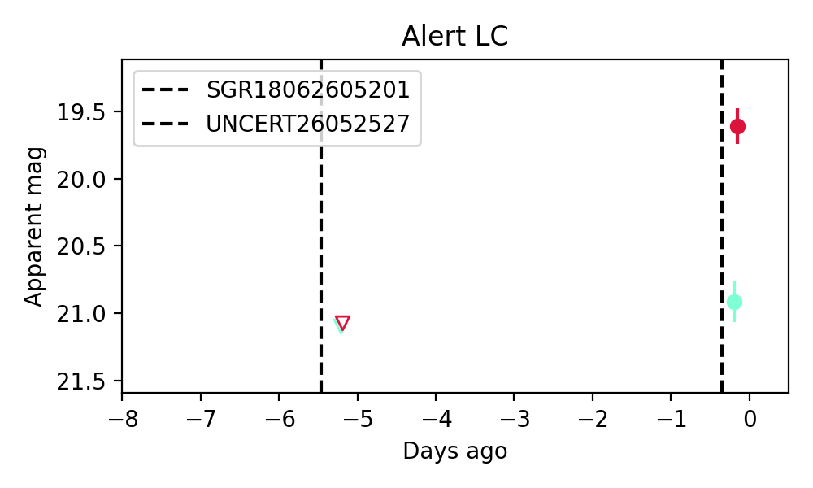
Consistent with synchrotron, g-r>0!
Section 2: Older Sources Observed Last Night (32)
0. ZTF26aaxhekl (Afterglow?) [Back to Top] [Share] [Trigger Swift] [Fritz ] [Lasair ]RA, Dec: 213.38247, 4.7545 14h13m31.79s, 4d45m16.20sGalactic (l, b): 347.73345, 60.27656 ext(g-r) = 0.024LegacySurvey: 1 sources in 3 arcsec Closest: d = 0.23 arcsec, 309.9 deg (east of north) photoz=2.18 (68% bounds 1.23, 2.43), type=PSF peak abs mag = -29.74 (68% bounds -28.21, -30.02) Consistent with synchrotron, g-r>0!
1. ZTF26aaxhhid (FBOT?) [Back to Top] [Share] [Trigger Swift] [Fritz ] [Lasair ]RA, Dec: 222.16174, 18.27637 14h48m38.82s, 18d16m34.92sGalactic (l, b): 20.96736, 61.63752 ext(g-r) = 0.047peak abs mag = -19.81 LegacySurvey: 1 sources in 3 arcsec Closest: d = 0.28 arcsec, 249.6 deg (east of north) photoz=0.06 (68% bounds 0.04, 0.11), type=SER peak abs mag = -19.44 (68% bounds -18.24, -20.83)
2. ZTF26aaxhwhr (Afterglow?) [Back to Top] [Share] [Trigger Swift] [Fritz ] [Lasair ]RA, Dec: 251.24251, -12.02058 16h44m58.20s, -12d-1m-14.07sGalactic (l, b): 6.21823, 21.1844 ext(g-r) = 0.555
3. ZTF26aaxilhv (FBOT?) [Back to Top] [Share] [Trigger Swift] [Fritz ] [Lasair ]RA, Dec: 235.12691, 43.96268 15h40m30.46s, 43d57m45.66sGalactic (l, b): 70.68839, 52.2413 ext(g-r) = 0.018peak abs mag = -22.08 PS1: 1 source in 3 arcsec Closest: d = 0.61 arcsec photoz=0.55+/-0.24 peak abs mag = -22.92 Consistent with synchrotron, g-r>0!
4. ZTF26aaxnjtw (FBOT?) [Back to Top] [Share] [Trigger Swift] [Fritz ] [Lasair ]RA, Dec: 310.00047, -10.29482 20h40m0.11s, -10d-17m-41.34sGalactic (l, b): 35.91391, -28.7475 ext(g-r) = 0.054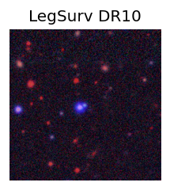
LegacySurvey: 1 sources in 3 arcsec Closest: d = 0.54 arcsec, 131.5 deg (east of north) photoz=1.38 (68% bounds 1.3, 1.49), type=PSF peak abs mag = -25.18 (68% bounds -25.02, -25.38)
5. ZTF26aaxrewv (Afterglow?) [Back to Top] [Share] [Trigger Swift] [Fritz ] [Lasair ]RA, Dec: 264.75712, -12.64103 17h39m1.71s, -12d-38m-27.72sGalactic (l, b): 13.1808, 9.79024 ext(g-r) = 0.544PS1: 1 source in 3 arcsec Closest: d = 5.24 arcsec photoz=1.03+/-0.11 peak abs mag = -26.18
6. ZTF26aaxthly (FBOT?) [Back to Top] [Share] [Trigger Swift] [Fritz ] [Lasair ]RA, Dec: 313.56202, 9.15238 20h54m14.88s, 9d 9m8.57sGalactic (l, b): 56.56292, -22.09211 ext(g-r) = 0.099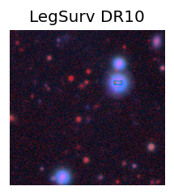
LegacySurvey: 1 sources in 3 arcsec Closest: d = 0.04 arcsec, 313.5 deg (east of north) photoz=0.48 (68% bounds 0.12, 1.11), type=REX peak abs mag = -26.57 (68% bounds -23.16, -28.79)
7. ZTF26aaxtpkn (Afterglow?) [Back to Top] [Share] [Trigger Swift] [Fritz ] [Lasair ]RA, Dec: 294.64949, 8.16484 19h38m35.88s, 8d 9m53.43sGalactic (l, b): 45.64616, -6.61772 ext(g-r) = 0.39
8. ZTF26aaychtj (FBOT?) [Back to Top] [Share] [Trigger Swift] [Fritz ] [Lasair ]RA, Dec: 258.47081, 76.15089 17h13m52.99s, 76d 9m3.19sGalactic (l, b): 108.02704, 32.05239 ext(g-r) = 0.044peak abs mag = -19.68 PS1: 1 source in 3 arcsec Closest: d = 0.13 arcsec photoz=0.25+/-0.12 peak abs mag = -21.15
9. ZTF26aaycvex (Afterglow?FBOT?) [Back to Top] [Share] [Trigger Swift] [Fritz ] [Lasair ]RA, Dec: 263.69604, 48.12405 17h34m47.05s, 48d 7m26.60sGalactic (l, b): 74.68151, 32.31262 ext(g-r) = 0.037PS1: 1 source in 3 arcsec Closest: d = 0.12 arcsec photoz=0.17+/-0.08 peak abs mag = -19.72 Consistent with synchrotron, g-r>0!
10. ZTF26aayerke (FBOT?) [Back to Top] [Share] [Trigger Swift] [Fritz ] [Lasair ]RA, Dec: 245.4825, 55.86337 16h21m55.80s, 55d51m48.13sGalactic (l, b): 85.43917, 42.89076 ext(g-r) = 0.007peak abs mag = -20.49 PS1: 1 source in 3 arcsec Closest: d = 0.94 arcsec photoz=0.20+/-0.10 peak abs mag = -20.27
11. ZTF26aayewuq (FBOT?) [Back to Top] [Share] [Trigger Swift] [Fritz ] [Lasair ]RA, Dec: 242.79668, 49.7888 16h11m11.20s, 49d47m19.67sGalactic (l, b): 77.70336, 45.89271 ext(g-r) = 0.022peak abs mag = -22.41 PS1: 1 source in 3 arcsec Closest: d = 1.09 arcsec photoz=0.59+/-0.11 peak abs mag = -22.69 Consistent with synchrotron, g-r>0!
12. ZTF26aayixka (Afterglow?) [Back to Top] [Share] [Trigger Swift] [Fritz ] [Lasair ]RA, Dec: 235.74321, -2.11793 15h42m58.37s, -2d-7m-4.56sGalactic (l, b): 4.59208, 39.40733 ext(g-r) = 0.174LegacySurvey: 1 sources in 3 arcsec Closest: d = 0.11 arcsec, 316.4 deg (east of north) photoz=0.83 (68% bounds 0.24, 1.38), type=PSF peak abs mag = -28.17 (68% bounds -24.98, -29.53) Consistent with synchrotron, g-r>0!
13. ZTF26aayjgre (Afterglow?FBOT?) [Back to Top] [Share] [Trigger Swift] [Fritz ] [Lasair ]RA, Dec: 252.8224, -25.89736 16h51m17.38s, -25d-53m-50.49sGalactic (l, b): 355.59577, 11.63052 WARNING: -3.37 deg from ecliptic plane ext(g-r) = 0.278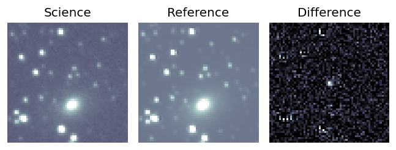
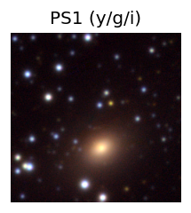
PS1: 1 source in 3 arcsec Closest: d = 3.88 arcsec photoz=0.10+/-0.02 peak abs mag = -19.78 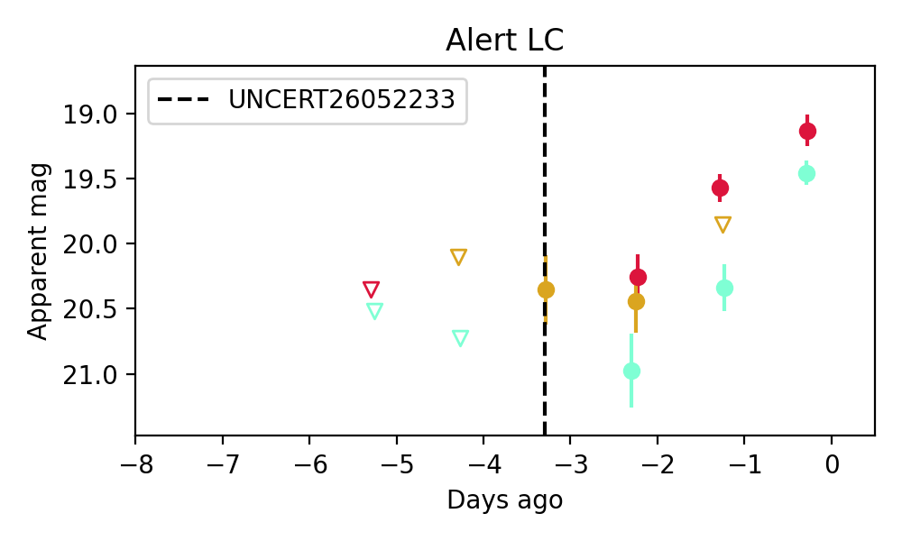
Consistent with synchrotron, g-r>0!
14. ZTF26aaylhvx (Afterglow?) [Back to Top] [Share] [Trigger Swift] [Fritz ] [Lasair ]RA, Dec: 291.47037, 41.50952 19h25m52.89s, 41d30m34.28sGalactic (l, b): 73.81428, 11.67826 ext(g-r) = 0.1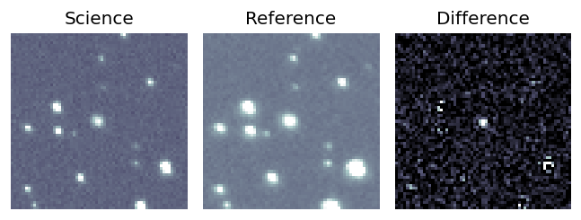
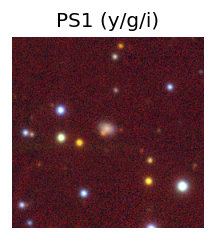
PS1: 1 source in 3 arcsec Closest: d = 0.82 arcsec photoz=0.11+/-0.02 peak abs mag = -18.93 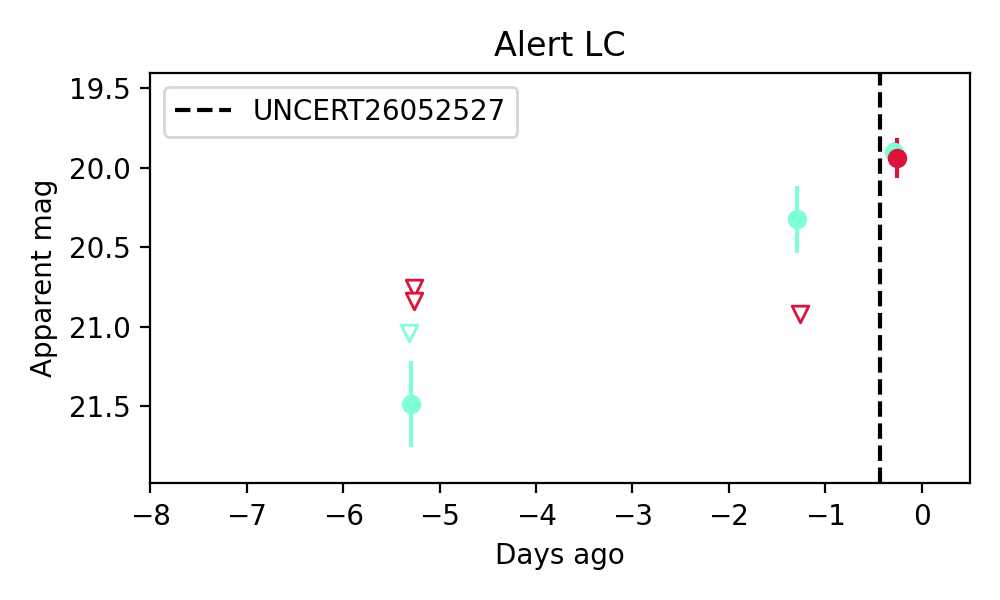
Consistent with synchrotron, g-r>0!
15. ZTF26aaymnok (FBOT?) [Back to Top] [Share] [Trigger Swift] [Fritz ] [Lasair ]RA, Dec: 344.06681, 25.30922 22h56m16.03s, 25d18m33.20sGalactic (l, b): 92.51798, -30.67433 ext(g-r) = 0.187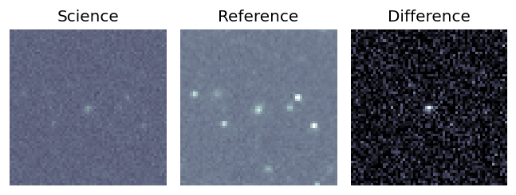
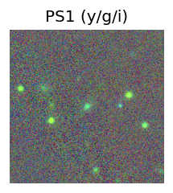
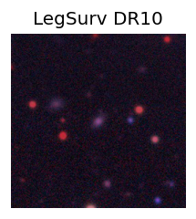
peak abs mag = -19.71 LegacySurvey: 1 sources in 3 arcsec Closest: d = 0.39 arcsec, 175.5 deg (east of north) photoz=0.17 (68% bounds 0.08, 0.23), type=SER peak abs mag = -19.55 (68% bounds -17.88, -20.34) 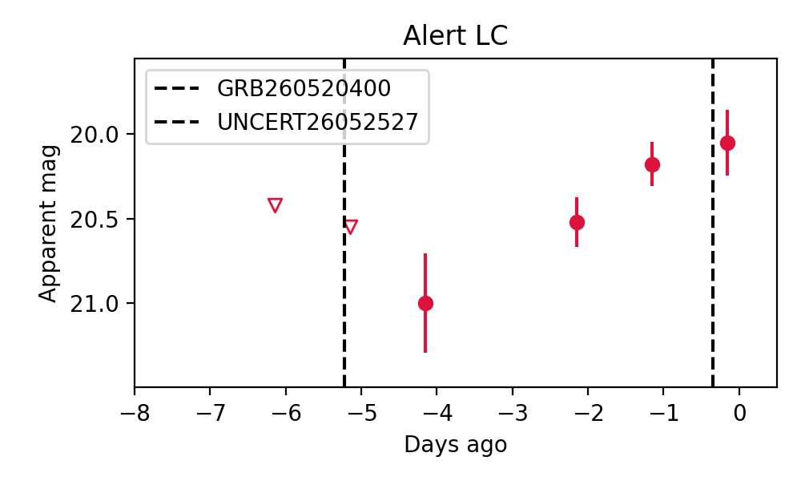
16. ZTF26aayocsv (FBOT?) [Back to Top] [Share] [Trigger Swift] [Fritz ] [Lasair ]RA, Dec: 227.04253, -0.42661 15h 8m10.21s, 0d-25m-35.79sGalactic (l, b): 358.59175, 47.12369 ext(g-r) = 0.067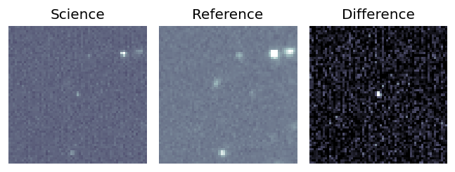
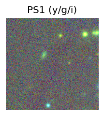
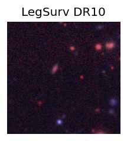
peak abs mag = -22.19 LegacySurvey: 1 sources in 3 arcsec Closest: d = 1.03 arcsec, 79.9 deg (east of north) photoz=0.93 (68% bounds 0.55, 1.27), type=PSF peak abs mag = -24.34 (68% bounds -22.97, -25.18) 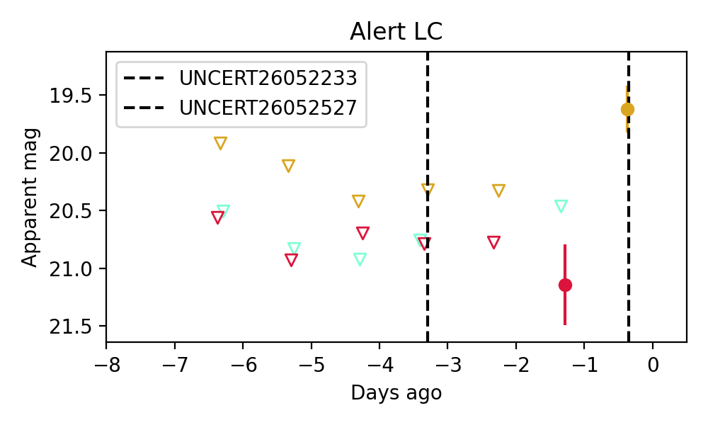
17. ZTF26aayokrv (FBOT?) [Back to Top] [Share] [Trigger Swift] [Fritz ] [Lasair ]RA, Dec: 246.15739, -15.74157 16h24m37.77s, -15d-44m-29.64sGalactic (l, b): 359.79557, 22.84555 ext(g-r) = 0.777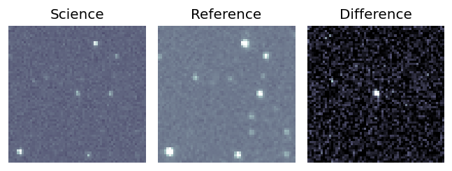
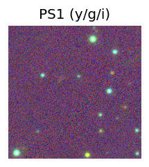
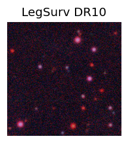
LegacySurvey: 1 sources in 3 arcsec Closest: d = 5.25 arcsec, 330.1 deg (east of north) photoz=0.06 (68% bounds 0.01, 1.54), type=PSF peak abs mag = -18.46 (68% bounds -14.15, -26.47) 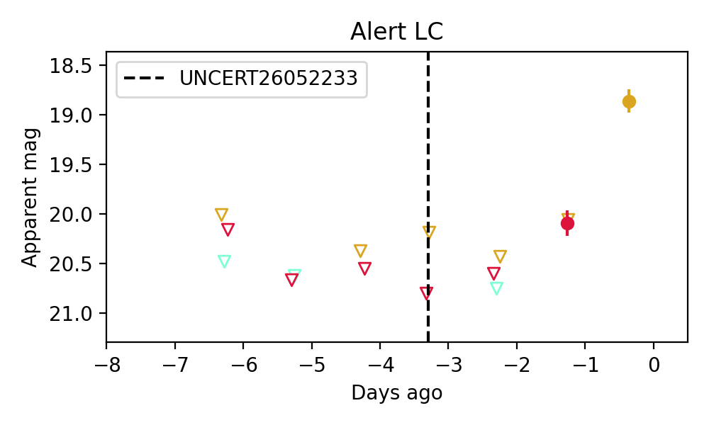
18. ZTF26aayotgz (Afterglow?) [Back to Top] [Share] [Trigger Swift] [Fritz ] [Lasair ]RA, Dec: 227.1874, -20.27518 15h 8m44.98s, -20d-16m-30.64sGalactic (l, b): 341.5747, 32.10157 WARNING: -2.53 deg from ecliptic plane ext(g-r) = 0.111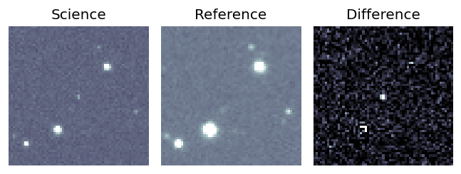
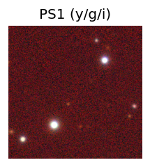
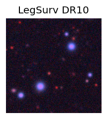
LegacySurvey: 1 sources in 3 arcsec Closest: d = 6.66 arcsec, 150.1 deg (east of north) photoz=0.26 (68% bounds 0.07, 0.84), type=PSF peak abs mag = -22.71 (68% bounds -19.76, -25.77) 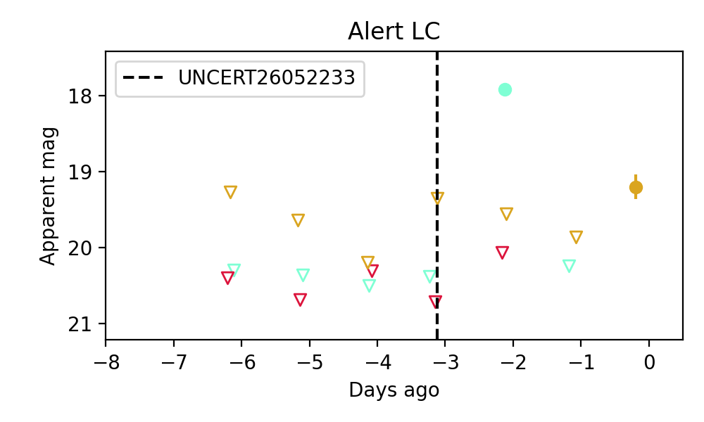
19. ZTF26aaypqin (FBOT?) [Back to Top] [Share] [Trigger Swift] [Fritz ] [Lasair ]RA, Dec: 243.47631, 27.91333 16h13m54.31s, 27d54m47.97sGalactic (l, b): 46.1937, 45.43572 ext(g-r) = 0.06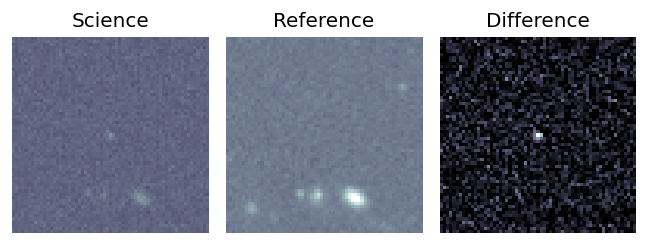
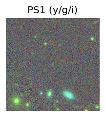
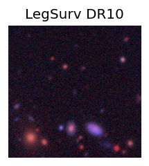
LegacySurvey: 1 sources in 3 arcsec Closest: d = 0.47 arcsec, 172.4 deg (east of north) photoz=0.68 (68% bounds 0.44, 0.92), type=REX peak abs mag = -22.78 (68% bounds -21.65, -23.57) 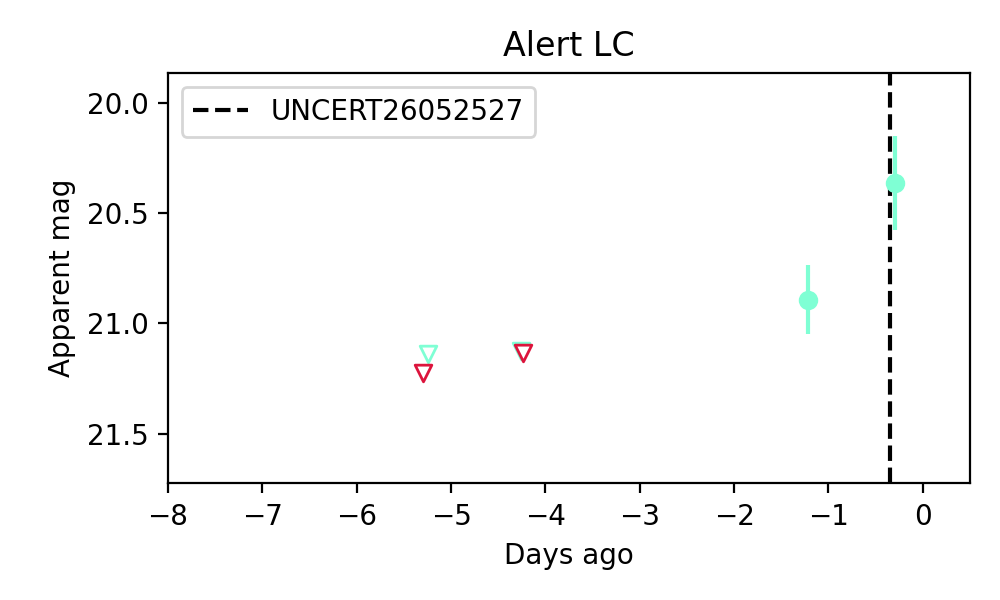
20. ZTF26aayptfl (FBOT?) [Back to Top] [Share] [Trigger Swift] [Fritz ] [Lasair ]RA, Dec: 232.3597, -21.7594 15h29m26.33s, -21d-45m-33.82sGalactic (l, b): 344.90589, 27.95423 WARNING: -2.73 deg from ecliptic plane ext(g-r) = 0.144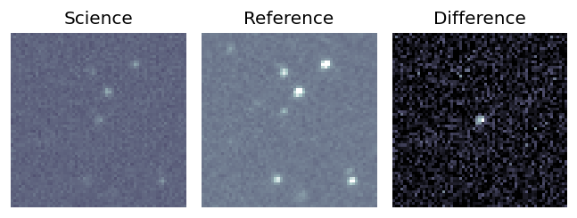
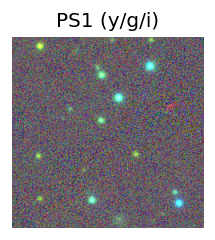
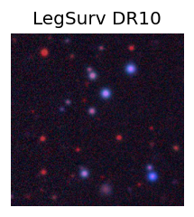
LegacySurvey: 1 sources in 3 arcsec Closest: d = 0.19 arcsec, 317.2 deg (east of north) photoz=0.92 (68% bounds 0.74, 1.16), type=REX peak abs mag = -24.67 (68% bounds -24.09, -25.29)
21. ZTF26aaypzzp (FBOT?) [Back to Top] [Share] [Trigger Swift] [Fritz ] [Lasair ]RA, Dec: 223.06132, 31.18847 14h52m14.72s, 31d11m18.48sGalactic (l, b): 48.97575, 63.39851 ext(g-r) = 0.02peak abs mag = -19.62 LegacySurvey: 1 sources in 3 arcsec Closest: d = 1.50 arcsec, 253.2 deg (east of north) photoz=0.15 (68% bounds 0.11, 0.26), type=SER peak abs mag = -19.42 (68% bounds -18.68, -20.78) Consistent with synchrotron, g-r>0!
22. ZTF26aayqsgr (FBOT?) [Back to Top] [Share] [Trigger Swift] [Fritz ] [Lasair ]RA, Dec: 241.18147, 22.1034 16h 4m43.55s, 22d 6m12.26sGalactic (l, b): 37.39098, 46.04427 ext(g-r) = 0.061LegacySurvey: 1 sources in 3 arcsec Closest: d = 2.28 arcsec, 10.7 deg (east of north) photoz=0.09 (68% bounds 0.08, 0.11), type=REX peak abs mag = -19.9 (68% bounds -19.63, -20.23) Consistent with synchrotron, g-r>0!
23. ZTF26aayreae (Afterglow?) [Back to Top] [Share] [Trigger Swift] [Fritz ] [Lasair ]RA, Dec: 259.00566, -23.74815 17h16m1.36s, -23d-44m-53.33sGalactic (l, b): 0.73059, 8.384 WARNING: -0.69 deg from ecliptic plane ext(g-r) = 0.903PS1: 1 source in 3 arcsec Closest: d = 2.71 arcsec photoz=0.25+/-0.03 peak abs mag = -22.78 Consistent with synchrotron, g-r>0!
24. ZTF26aayrfjx (FBOT?) [Back to Top] [Share] [Trigger Swift] [Fritz ] [Lasair ]RA, Dec: 288.22893, -2.50505 19h12m54.94s, -2d-30m-18.17sGalactic (l, b): 33.14679, -5.91962 ext(g-r) = 0.711PS1: 1 source in 3 arcsec Closest: d = 1.36 arcsec photoz=0.44+/-0.08 peak abs mag = -24.20
25. ZTF26aayrobv (FBOT?) [Back to Top] [Share] [Trigger Swift] [Fritz ] [Lasair ]RA, Dec: 266.70948, 22.08521 17h46m50.28s, 22d 5m6.76sGalactic (l, b): 46.63937, 23.6302 ext(g-r) = 0.12LegacySurvey: 1 sources in 3 arcsec Closest: d = 0.52 arcsec, 56.4 deg (east of north) photoz=0.17 (68% bounds 0.13, 0.19), type=REX peak abs mag = -19.14 (68% bounds -18.56, -19.45) Consistent with synchrotron, g-r>0!
26. ZTF26aaysega (FBOT?) [Back to Top] [Share] [Trigger Swift] [Fritz ] [Lasair ]RA, Dec: 324.41975, -1.72324 21h37m40.74s, -1d-43m-23.67sGalactic (l, b): 53.16039, -37.14757 ext(g-r) = 0.057peak abs mag = -24.59 LegacySurvey: 1 sources in 3 arcsec Closest: d = 0.48 arcsec, 105.7 deg (east of north) photoz=0.07 (68% bounds 0.04, 0.11), type=REX peak abs mag = -18.13 (68% bounds -16.5, -18.98)
27. ZTF26aaysfyr (Afterglow?) [Back to Top] [Share] [Trigger Swift] [Fritz ] [Lasair ]RA, Dec: 324.35882, 1.34126 21h37m26.12s, 1d20m28.53sGalactic (l, b): 56.25924, -35.3719 ext(g-r) = 0.054peak abs mag = -17.92 LegacySurvey: 1 sources in 3 arcsec Closest: d = 0.89 arcsec, 134.4 deg (east of north) photoz=0.1 (68% bounds 0.08, 0.13), type=SER peak abs mag = -18.4 (68% bounds -17.8, -19.0)
28. ZTF26aaysmyr (Afterglow?) [Back to Top] [Share] [Trigger Swift] [Fritz ] [Lasair ]RA, Dec: 278.80843, -1.54054 18h35m14.02s, -1d-32m-25.93sGalactic (l, b): 29.7102, 2.89994 ext(g-r) = 2.27
29. ZTF26aaysotv (FBOT?) [Back to Top] [Share] [Trigger Swift] [Fritz ] [Lasair ]RA, Dec: 268.34508, 54.10405 17h53m22.82s, 54d 6m14.59sGalactic (l, b): 81.97568, 30.01081 ext(g-r) = 0.048peak abs mag = -19.82 PS1: 1 source in 3 arcsec Closest: d = 0.32 arcsec photoz=0.29+/-0.11 peak abs mag = -20.53 Consistent with synchrotron, g-r>0!
30. ZTF26aaysrjh (Afterglow?) [Back to Top] [Share] [Trigger Swift] [Fritz ] [Lasair ]RA, Dec: 286.99483, 35.75836 19h 7m58.76s, 35d45m30.09sGalactic (l, b): 66.97244, 12.37923 ext(g-r) = 0.107 Consistent with synchrotron, g-r>0!
31. ZTF26aaysvom (FBOT?) [Back to Top] [Share] [Trigger Swift] [Fritz ] [Lasair ]RA, Dec: 277.45017, 50.05245 18h29m48.04s, 50d 3m8.80sGalactic (l, b): 78.61677, 23.79356 ext(g-r) = 0.057PS1: 1 source in 3 arcsec Closest: d = 1.13 arcsec photoz=0.62+/-0.39 peak abs mag = -22.55 Consistent with synchrotron, g-r>0!